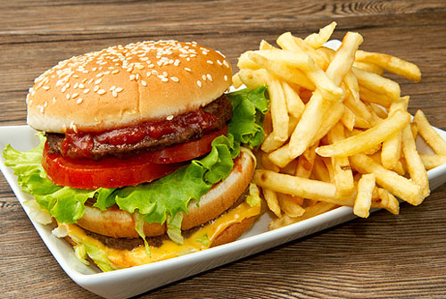

La Lasaña (Lasagna)

La lasaña (italiano: lasagna) es un tipo de pasta que se sirve en láminas, además de denominarse así también a un plato que tiene pasta en láminas intercaladas con carne (ragú o salsa boloñesa) y bechamel llamado lasaña al horno (Lasagna al forno). Se trata de un plato de origen griego/italiano.1 La lasaña al horno también se puede hacer con verduras (espinacas, berenjenas, etc.) o pescados.2 Se termina con bechamel y abundante queso rallado para gratinarla en el horno. Ambos platos tienen como lugar de origen Italia. La palabra "lasaña" proviene del griego "lasanon", a través del latín "lasanum", que se refiere al cazo en el que se cocinaba. La palabra singular en italiano es lasagna y en plural lasagne se aplica indistintamente al plato o a la pasta en forma de láminas. Es una entrada o primer plato caliente que se suele comer en invierno o en los periodos fríos de la primavera.
Las Hamburguesas
Una hamburguesa es un alimento en forma de bocadillo de carne picada aglutinada en forma de filete, cocinado a la parrilla o a la plancha, aunque también puede freírse u hornearse. Fuera del ámbito de habla hispana es más común encontrar la denominación inglesa burger. Se presenta en un pan ligero partido en dos que posee una forma de óvalo. Suele estar acompañada de aros de cebolla, hojas de lechuga, alguna rodaja de tomate, láminas de encurtidos, papas fritas etc. Se suele alinear con algún condimento como puede ser: salsa de tomate, mostaza, relish, mayonesa, etc.1 En el caso de que se ponga una lámina de queso procesado se convierte en una hamburguesa con queso (cheeseburger).2 Denominada a veces: la "hamburguesa amarilla" ("yellowburger").